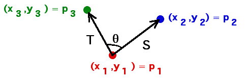
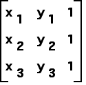

| Form the vectors S = p2 - p1 and
T = p3 - p1. |
|  |
| The angle between T and S is 0 or 180 if and only if the points p1,
p2, and p3 are collinear. |
| The vector cross-product measures the angle between vectors, but is defined only for vectors in 3-dimensional
space. This is resolved easily by defining auxiliary vectors S' and T' |
| S' = < x2 - x1, y2 - y1, 0 > and T' =
< x3 - x1, y3 - y1, 0 > |
| Then we know the length |S' x T'| satisfies |
| |S' x T'| = |S'| |T'| sin(theta) |
| As long as p1,
p2, and p3 are
distinct points, the lengths |S'| and |T'| are nonzero. |
| Consequently, |S' x T'| = 0 if and only if sin(theta) = 0. That is,
if and only if the points p1,
p2, and p3 are collinear. |
| Recalling the matrix definition of cross-product, we see |
|
| Consequently, |
|
| Recalling that a matrix is invertible if and only if its determinant is nonzero, we see the
coefficiant matrix |
|  |
| is invertible if and only if the points p1,
p2, and p3 are not collinear. |
|